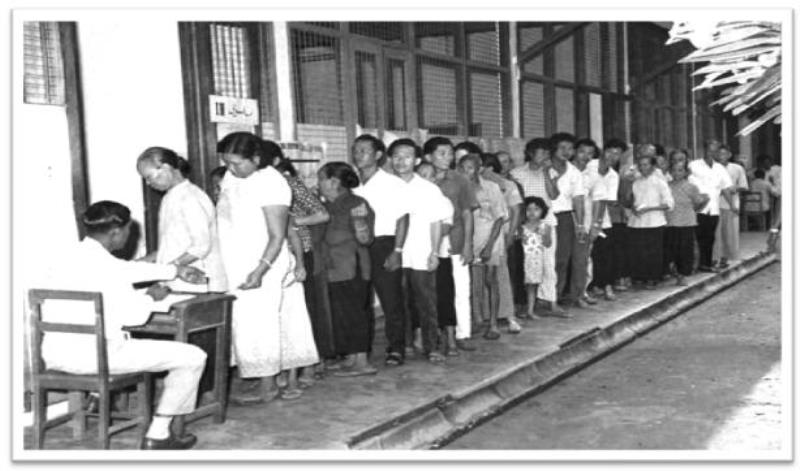

"Pilihan Raya" is a Malay term that translates to "election" in English. It is commonly used in Malaysia and other Malay-speaking regions. The term is associated with the democratic process of choosing representatives or leaders through voting. In the context of Malaysia, "Pilihan Raya" specifically refers to the electoral process, including general elections, by-elections, and other democratic exercises where the Malaysian populace participates in selecting their representatives at various levels of government. These representatives may include Members of Parliament (MPs), State Legislative Assembly members, and local government officials.
The history of Pilihan Raya (elections) in Malaysia is marked by the country's transition from British colonial rule to independence in 1957 and the subsequent formation of Malaysia in 1963. The 1969 general election, though significant, led to racial tensions and riots, prompting the introduction of the New Economic Policy (NEP) in 1971. For decades, the Barisan Nasional (BN) coalition, led by the United Malays National Organization (UMNO), dominated Malaysian politics. In 2018, a historic shift occurred with the defeat of BN, leading to the formation of a new government under Pakatan Harapan. Malaysia's political landscape continues to evolve, with elections playing a pivotal role in shaping the country's democratic governance.
